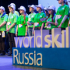

Участники чемпионата «Молодые профессионалы» смогут получить работу на Сахалине по итогам

8 августа 2018 в 17:49
Иванов Олег, главный специалист отдела кадров
Участники чемпионата «Молодые профессионалы» смогут получить работу на Сахалине по итогам состязаний. Об этом сообщил глава региона Олег Кожемяко во время визита на площадку, где состоится финал VI национального чемпионата «Молодые профессионалы (Worldskills Russia)».
- Безусловно, это мероприятие обогатит наш регион профессионалами. У наших предприятий появится возможность выбрать самых компетентных ребят и дать им достойную работу. Отмечу, что зарплата хороших мастеров в Сахалинской области начинается от 75 тысяч рублей. - сказал Кожемяко. - Думаю, что руководители островных предприятий должны побывать на этих соревнованиях в обязательном порядке. Здесь будут представлены лучшие технологии и специалисты России.
Напомним, инфраструктура для проведения финала VI национального чемпионата «Молодые профессионалы (Worldskills Russia)» создавалась с нуля. Над подготовкой павильонов, где пройдут состязания, сейчасработают несколько сотен человек. По словам организаторов, все оборудование смонтировано, идет его установка и настройка. В некоторых залах подходит к концу косметический ремонт.
- С понедельника, 6 августа начнется обучение экспертов судейской работе. Этому посвящен один день. Естественно, что на всех площадках стандарты проведения и процедуры оценки едины. Судьям необходимо хорошо знать их, – рассказал заместитель генерального директора, технический директор чемпионата Молодые профессионалы (Worldskills Russia)» Алексей Тымчиков. – Подавляющее большинство экспертов – это люди, которые уже проводили региональные соревнования, демонстрационные экзамены по стандартам Worldskills, они участвовали в прошлогоднем чемпионате. Есть и те, у кого совсем небольшой судейский опыт, но мы привлекаем их, так как профессиональное сообщество должно расти.
Нацфинал-2018 пройдет в Сахалинской области с 8 по 11 августа. На него приедут около 3,5 тысяч гостей: участники соревнований, эксперты, делегации из регионов, журналисты и зрители. Как сообщалось ранее, это первый Национальный финал за историю существования движения Worldskills Russia, где участвуют все 85 регионов Российской Федерации.
Источник: пресс-секретарь губернатора Сахалинской области
Другие новости
-

-
-